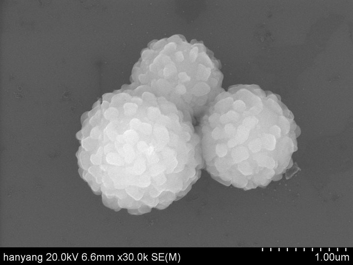
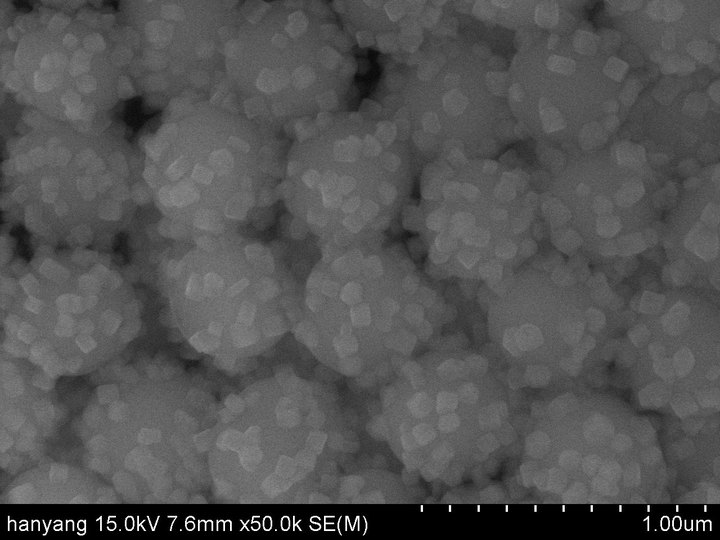
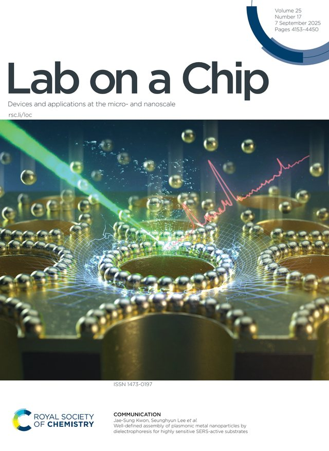
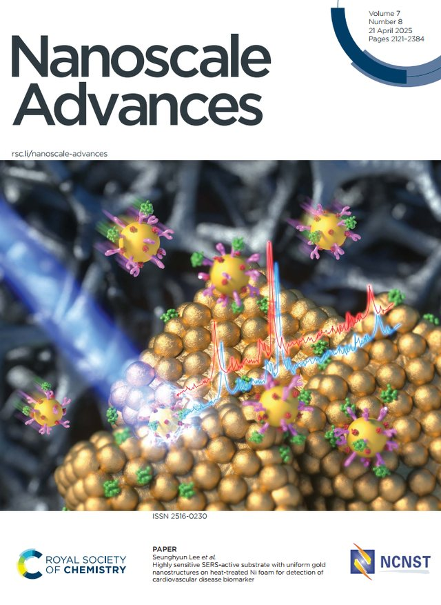

Lab on a Chip 25 (17), 4309-4316 (2025)
Jaejun Park 박재준
Ph.D. Candidate in Applied Chemistry응용화학과 박사과정 수료 (Ph.D. Candidate)
Plasmonic Hybrid Nanomaterial Lab, Hanyang University ERICA, Korea한양대학교 ERICA, Plasmonic Hybrid Nanomaterial Lab (PHNL)
- non6512@hanyang.ac.kr
- Scholar
- Google Scholar
- ORCID
- 0009-0000-9431-3953
- Lab
- PHNL
I study morphology-controlled anisotropic nanoparticles, including multipod silica, and how particle shape and surface architecture govern optical and electrocatalytic behavior.
I apply this structural design along two lines. I fabricate SERS-active substrates in which shape-dependent plasmonic hotspots enable sensitive Raman detection, and I develop electrocatalysts for water electrolysis that I am extending to the electrochemical conversion of lignin-derived compounds.
To connect structure with function, I build finite element models in COMSOL Multiphysics to simulate plasmonic near-fields. These simulations appear in my Lab on a Chip and Nanoscale Advances papers. I also carried out the DFT calculations for a study of heterointerface catalysts published in Small.
형상이 제어된 anisotropic nanoparticle, 특히 multipod silica를 연구합니다. 입자의 형상과 표면 구조가 광학적 특성과 electrocatalytic 거동을 어떻게 결정하는지에 관심이 있습니다.
이 구조 설계를 두 방향으로 응용하고 있습니다. 하나는 형상에 따라 달라지는 plasmonic hotspot을 이용한 SERS-active substrate 제작이고, 다른 하나는 water electrolysis용 electrocatalyst 개발이며 이를 lignin 유래 화합물의 전기화학적 전환으로 확장하고 있습니다.
구조와 기능의 관계를 설명하기 위해 COMSOL Multiphysics로 finite element model을 직접 구축해 plasmonic near-field를 계산합니다. 이 계산 결과는 Lab on a Chip과 Nanoscale Advances 논문에 실렸습니다. Small에 게재된 heterointerface 촉매 연구에서는 DFT 계산을 수행했습니다.
| Publications | 12 |
|---|---|
| Citations | 142 |
| h-index | 6 |
| Citation data from Google Scholar, November 2026Citation 기준: Google Scholar, 2026년 11월 | |
Education
Ph.D. Candidate in Applied Chemistry응용화학과 박사과정 수료 (Ph.D. Candidate)
2022 – present2022 – 현재
Hanyang University ERICA, Ansan, Korea한양대학교 ERICA
Advisor: Prof. Seunghyun Lee. Expected completion: February 2028.지도교수: 이승현 교수. 학위 취득 예정: 2028년 2월.
B.S. in Chemical and Molecular Engineering화학분자공학과 학사
2016 – 2021
Hanyang University ERICA, Ansan, Korea한양대학교 ERICA
Research highlights
One-pot synthesis of multipod silica nanoparticlesMultipod silica nanoparticle의 one-pot 합성
We developed a one-pot method for preparing multipod silica nanoparticles and studied how halide ions affect their surface morphology. Coating the multipods with gold turns them into SERS-active substrates. The method is protected by a registered Korean patent, with PCT and US applications.Multipod silica nanoparticle을 one-pot으로 합성하는 방법을 개발하고, halide ion이 표면 형상에 미치는 영향을 연구했습니다. Multipod에 gold를 코팅하면 SERS-active substrate로 쓸 수 있습니다. 이 합성법은 국내 특허로 등록되었고 PCT와 미국에 출원되어 있습니다.


SERS-active substrates assembled by dielectrophoresisDielectrophoresis로 조립한 SERS-active substrate
We assembled plasmonic metal nanoparticles into well-defined, uniform patterns by dielectrophoresis. The assembly forms stable hotspots and allowed molecular detection down to 10−10 M. The paper was selected for the journal front cover.Dielectrophoresis로 plasmonic metal nanoparticle을 균일한 패턴으로 조립했습니다. 이렇게 만든 구조는 안정적인 hotspot을 형성하며 10−10 M 수준의 분자 검출이 가능했습니다. 이 논문은 저널 front cover로 선정되었습니다.
Gold nanostructures on Ni foam for cardiac biomarker detectionCardiac biomarker 검출을 위한 Ni foam 기반 Au nanostructure
We developed a SERS-active substrate with uniform gold nanostructures on heat-treated Ni foam and applied it to the detection of cardiovascular disease biomarkers such as troponin I. The paper was selected for the journal front cover.열처리한 Ni foam 위에 균일한 Au nanostructure를 형성한 SERS-active substrate를 개발하고, troponin I 등 cardiovascular disease biomarker 검출에 적용했습니다. 이 논문은 저널 front cover로 선정되었습니다.
Heterointerface catalysts for alkaline water splittingAlkaline water splitting을 위한 heterointerface catalyst
We reported a MoO2@N/Mo-ReS2 hybrid catalyst in which heterointerface-driven electronic modulation improves the active sites and catalytic performance for alkaline HER, OER and overall water splitting. I carried out the DFT calculations for this study.Heterointerface에 의한 electronic modulation으로 active site와 촉매 성능을 높인 MoO2@N/Mo-ReS2 hybrid catalyst를 보고했습니다. Alkaline HER, OER, overall water splitting에 적용했으며, 이 연구에서 DFT 계산을 수행했습니다.
Journal covers Four front covers. Select a cover to enlarge it.Front cover 4건. 표지를 누르면 크게 보입니다.




Selected publications All papers, patents and presentations전체 논문, 특허, 학회 발표
† Equal contribution공동 제1저자 (equal contribution)Front cover Journal front cover저널 front cover 선정
Mechanistic insights into MEA stability and degradation in industrial-scale electrolysis: Fundamentals, recent progress, challenges, and future perspectives
Nano Convergence, accepted (2026)게재 승인 (2026)
Elastomers and Composites 61 (1), 1-7 (2026)
Small 21 (34), 2505906 (2025)
Applied Spectroscopy Reviews 60 (9-10), 1042-1085 (2025)